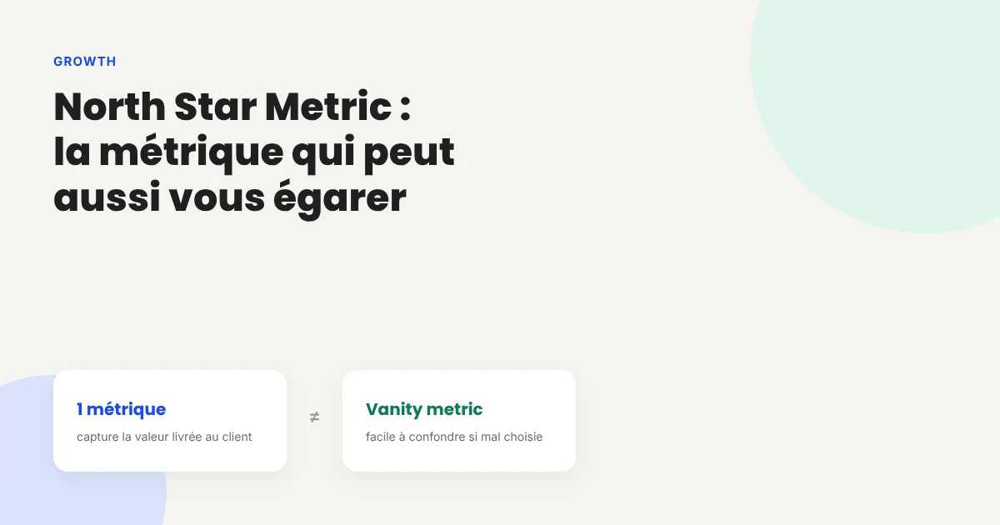

North Star Metric : la métrique unique qui peut aussi vous égarer
Popularisée par l'investisseur Sean Ellis et le mouvement growth hacking, la North Star Metric promet d'aligner toute une équipe autour d'un seul chiffre qui reflète la valeur livrée au client. C'est une excellente idée — à condition de bien choisir ce chiffre, parce qu'une North Star Metric mal choisie est une vanity metric que plus personne n'ose remettre en question.

L'idée de la North Star Metric est séduisante dans sa simplicité : au lieu de suivre des dizaines d'indicateurs dispersés, une équipe s'aligne autour d'un seul chiffre qui résume la valeur réelle que le produit livre à ses clients. Le terme est largement attribué à Sean Ellis, investisseur et figure du mouvement growth hacking, dont le travail chez des entreprises comme Dropbox a contribué à populariser l'approche au début des années 2010. Les exemples qui reviennent le plus souvent : les nuitées réservées pour Airbnb, les utilisateurs actifs quotidiens pour Facebook. Le principe tient en une phrase : choisir la métrique qui ne peut monter que si le client retire une valeur réelle, pas seulement si l'entreprise pousse plus fort sur l'acquisition ou l'activité.
Pourquoi l'idée fonctionne, en théorie
Une seule métrique, suivie par toute l'organisation, réduit un risque réel : celui des équipes qui optimisent chacune leur propre indicateur local (le marketing pousse les inscriptions, le produit pousse les sessions, les ventes poussent les contrats signés) sans qu'aucun de ces chiffres ne garantisse que le client en tire une valeur réelle. Une North Star Metric bien choisie oblige à se poser la bonne question avant chaque décision : est-ce que cette action fait vraiment monter la valeur livrée au client, ou seulement un chiffre d'activité qui lui ressemble ?
Le piège : une mauvaise North Star devient la vanity metric la plus protégée de toutes
C'est précisément là que le risque se cache. Une métrique de vanité classique (un nombre de followers, un nombre de téléchargements) est généralement reconnue comme telle assez vite, parce qu'elle n'a jamais prétendu représenter autre chose qu'une activité de surface. Une North Star Metric mal choisie est bien plus dangereuse, parce qu'elle porte l'autorité de « la métrique qui compte vraiment » — toute l'organisation s'aligne dessus, personne ne la remet en question, et une dégradation de la valeur réelle livrée au client peut rester invisible pendant longtemps si la métrique choisie est en réalité une mesure d'activité plutôt qu'une mesure de valeur. Un nombre d'inscriptions qui continue de monter peut très bien masquer une rétention et une satisfaction réelles en chute libre, si personne ne vérifie que « inscription » et « valeur livrée » sont vraiment la même chose.
Comment distinguer une vraie North Star Metric d'une métrique d'activité déguisée
Le test le plus fiable : se demander si la métrique peut monter sans qu'aucune valeur réelle n'ait été livrée au client. Un nombre de comptes créés peut monter uniquement grâce à une campagne d'acquisition agressive, sans qu'un seul de ces comptes n'utilise jamais le produit — ce n'est donc pas une bonne candidate. Un nombre de nuitées réellement réservées et honorées, en revanche, suppose qu'un client a trouvé un logement, l'a réservé, et l'a effectivement utilisé : la valeur est intégrée dans le chiffre lui-même, pas seulement corrélée avec lui.
Ce qu'il faut faire avant d'adopter une North Star Metric, pas après
La vérification ne doit pas attendre que la métrique commence à décevoir : elle doit se faire avant son adoption, en confrontant explicitement la métrique candidate à un scénario où elle pourrait monter sans aucune valeur réelle livrée. Si ce scénario existe et semble plausible (et il existe presque toujours un moyen de gonfler artificiellement un chiffre d'activité), la métrique a besoin d'un garde-fou complémentaire — généralement une deuxième métrique de qualité ou de rétention suivie en parallèle, qui empêche la North Star Metric de devenir, par facilité, une vanity metric qu'on ne regarde plus d'un œil critique.
FAQ
Qui a inventé la North Star Metric ?
Le terme est largement attribué à Sean Ellis, investisseur et figure du mouvement growth hacking, qui l'a popularisé en lien avec son travail chez des entreprises comme Dropbox. L'idée exacte de son origine précise fait débat selon les sources, mais l'attribution à Sean Ellis et au mouvement growth du début des années 2010 est la plus largement reprise.
Qu'est-ce qu'une bonne North Star Metric ?
Une bonne North Star Metric capture la valeur réelle que le produit livre au client, pas seulement l'activité de l'entreprise. Les exemples classiques sont les nuitées réservées pour Airbnb ou les utilisateurs actifs quotidiens pour Facebook — des métriques qui ne montent que si le client retire une valeur concrète, pas uniquement si l'entreprise pousse plus fort sur l'acquisition.
Pourquoi une North Star Metric mal choisie est-elle dangereuse ?
Parce qu'elle devient la référence unique que personne ne questionne, et peut donc masquer un problème pendant longtemps si elle a été choisie pour sa facilité à monter plutôt que pour sa fidélité à la valeur réelle livrée au client. Une métrique d'activité (comme le nombre d'inscriptions) peut monter alors que la rétention et la satisfaction réelles se dégradent.
Une North Star Metric à challenger avant qu'elle ne devienne un angle mort ?
Pour aller plus loin, voir l'article cohort analysis : la méthode pour savoir si votre croissance est saine, et CAC et LTV : la méthode pour savoir si votre acquisition est vraiment rentable.
Pour continuer sur ce sujet.